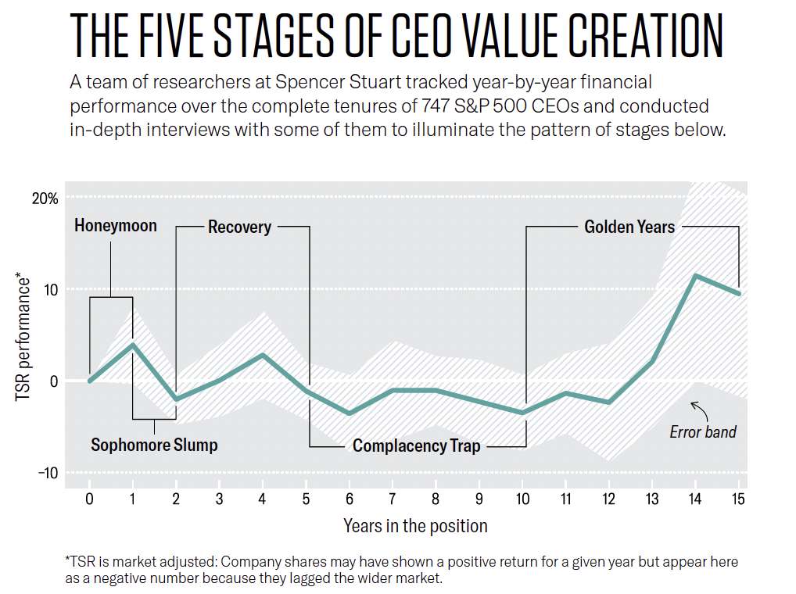
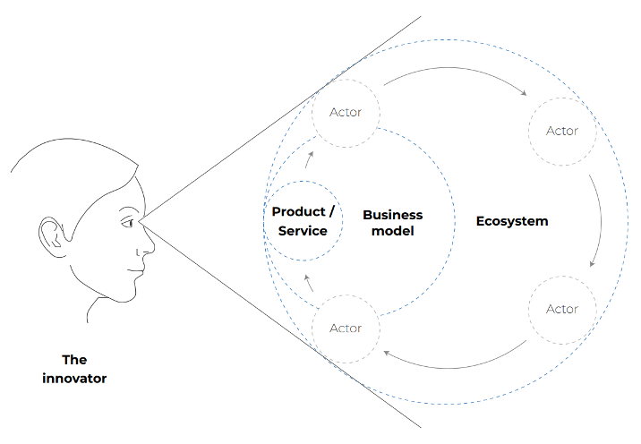
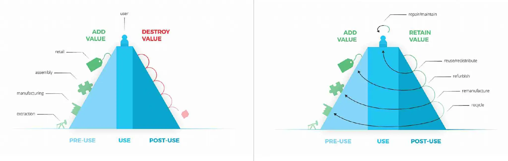

Value Creation, Assets, and CEO Mandates

Source: Citrin et al. (2019), Harvard Business Review
Empirical research on CEO tenures shows that value creation follows recurring patterns over time when observed through market-adjusted Total Shareholder Return. Drawing on longitudinal data from hundreds of CEOs, Citrin, Hildebrand, and Stark identify five stages through which performance typically unfolds across a mandate. These stages describe how outcomes appear from a capital-market perspective.
From Performance Stages to Governance Stages
Subsequent work by Hildebrand and Stark reframes the CEO lifecycle to reflect how mandates are experienced and governed under contemporary conditions. In The CEO Life Cycle, they retain the five-stage structure but relabel the stages as:
Launch → Acceleration → Sustainment → Renewal → Transition
This reframing does not replace the empirical findings of Citrin, Hildebrand, and Stark. It translates that pattern into governance-relevant language, shifting the emphasis from ex post performance outcomes to how leadership attention, board interaction, and mandate expectations evolve over a CEO's tenure.
CEO Roles Across Evolving Stages
More recent research shifts the analytical lens from stages to roles. CEOs are required to activate different roles as conditions change, often simultaneously. A CEO may need to act as Builder and Operator at the same time, or shift rapidly between Operator and Transformer in response to external shocks.
Taken together, these frameworks show an evolution from observed performance patterns, to governance stages, to role-based leadership demands under volatility.
Changing Conditions for Value Creation
What distinguishes the current period from the one in which these lifecycle patterns were originally observed is the compression of CEO mandates alongside the extension of strategic exposure. Median CEO tenure in large European listed companies has fallen to approximately five to six years, while a substantial share of CEOs believe their firms may not remain economically viable over the next decade without significant change.
Strategic decisions are therefore taken within comparatively short mandates, even as their consequences unfold over much longer horizons.
At the same time, digital technologies, platforms, and ecosystems blur organizational boundaries. Innovation increasingly occurs across firms rather than within them. Global supply chains optimized for efficiency are exposed to geopolitical tension, regulatory fragmentation, and repeated disruption. Resource constraints, price volatility, and input uncertainty affect long-term asset planning and capital allocation.
These conditions do not eliminate lifecycle stages. They compress them. CEOs are required to act simultaneously as operators of existing systems and stewards of asset configurations whose economic consequences extend beyond their mandate.
Asset Economics as the Missing Layer
The CEO is the steward of assets under pressure.
Capital is committed. Infrastructure exists. Supply chains are configured. Assets are already in motion. After sale, products and systems continue to consume capacity, capital, and attention. They either remain productive across systems or begin to leak value through degradation, write-downs, and external capture. This trajectory is determined upstream—through design, sourcing, and system architecture.
This is asset economics.

Source: Konietzko et al. (2021), Business Innovation Towards a Circular Economy, p. 95
Products sit within business models. Business models are increasingly embedded in ecosystems. Value persists with those who retain control over how outputs return as inputs. Where this control is lost, value migrates elsewhere.
Tangible Losses and Asset Drawdown
Empirical evidence illustrates the scale of the issue. In large appliance and electronics logistics, damage rates of roughly 6–15% translate into approximately €2.7 billion in direct losses per year in Europe alone and an estimated €14 billion globally in 2024. These losses appear in financial reporting as markdowns, returns, repairs, re-delivery, and disposals.
What remains unobserved is the associated drawdown of future productive capacity: additional material extraction, energy use, reverse logistics load, immobilised working capital, and operational risk. Financial reporting captures realised loss. The condition of the asset base remains largely invisible.

Source: Circle Economy 2016 - Master circular business with the value hill, pp. 4-5
Early value creation is visible and rewarded. Later value resides inside assets, components, and materials. It is harder to observe and easier to discount. Decisions that accelerate visible returns are often approved. Decisions that preserve asset capacity tend to sit outside dominant evaluation frames.
The Governance Gap
Performance evaluation across CEO mandates relies primarily on aggregated financial outcomes measured over defined periods. These measures support comparison, accountability, and market discipline. However, they do not distinguish between returns generated through disciplined capital stewardship and returns generated through accelerated asset drawdown or deferred reinvestment.
This distinction becomes economically relevant under conditions of volatility, constrained inputs, and rising capital intensity, where short-term optimisation can increase medium-term downside risk or impair future cash-flow stability.
A firm crosses a strategic threshold when linear optimisation remains technically feasible but becomes economically irrational under these conditions. Beyond this point, preserving asset integrity is no longer discretionary but economically non-optional.
Existing lifecycle and role frameworks describe how leadership work is organised. They do not provide a mechanism to govern how asset value is preserved, extended, or eroded across mandates.
This is the gap the extended return logic addresses.
It retains Total Shareholder Return as the external reference for realised performance, while introducing a governance constraint focused on capital stewardship and asset integrity. The objective is not to redefine performance, but to distinguish between value creation that reinforces future earning capacity and value creation that draws it down.
Once asset integrity becomes a condition for cash-flow stability, regulatory compliance, or access to critical inputs, it functions as a prerequisite for performance.
They arbitrate between viable and non-viable futures.
At that point, what were once initiatives become infrastructure.